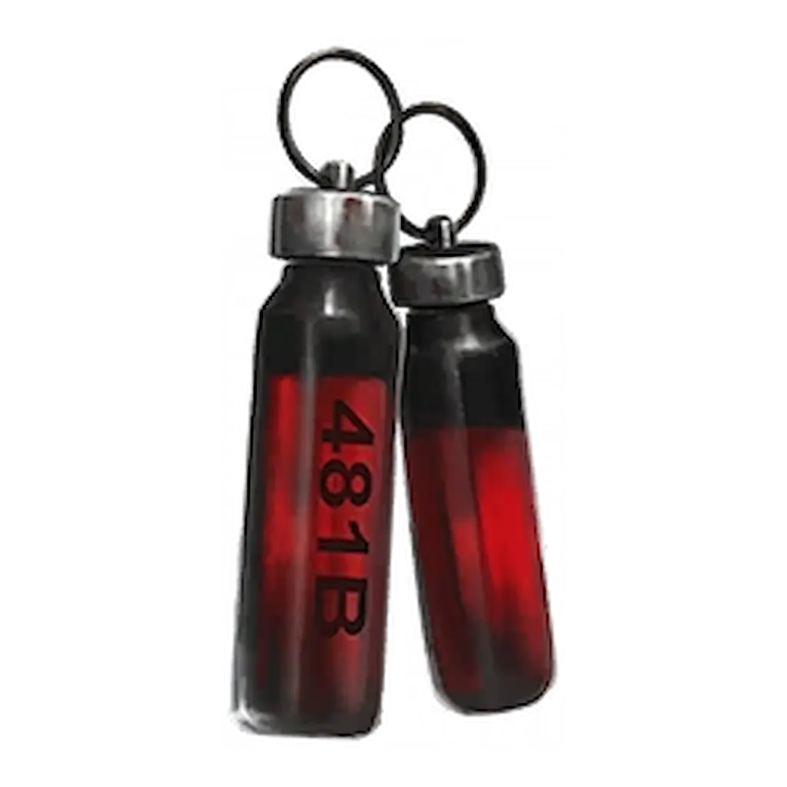
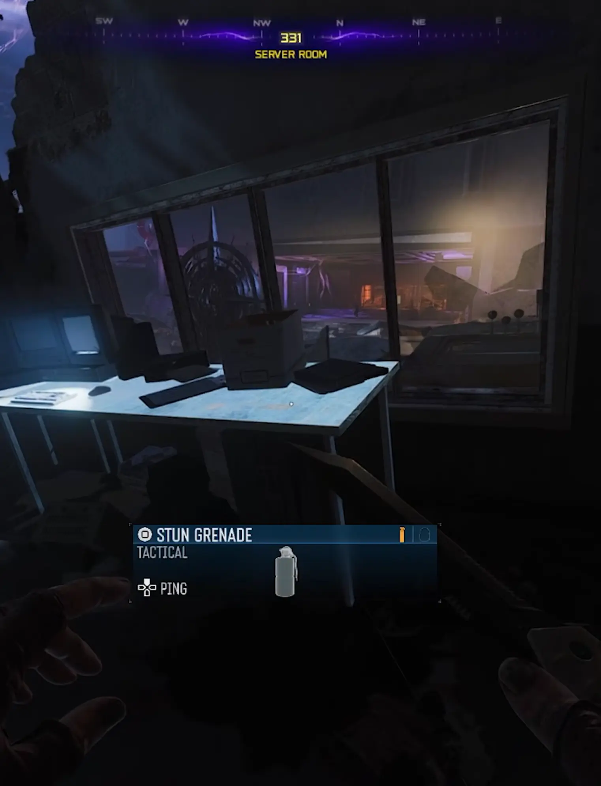
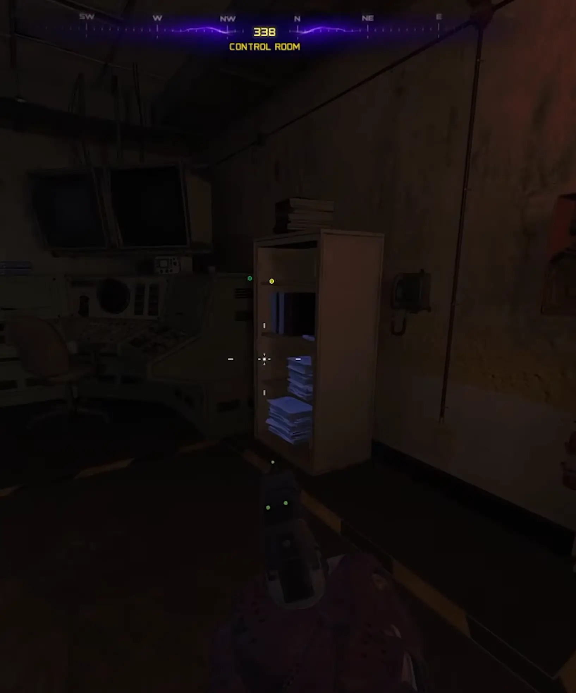
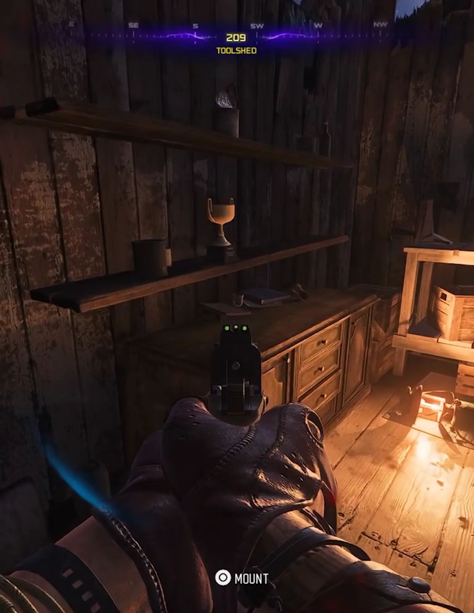
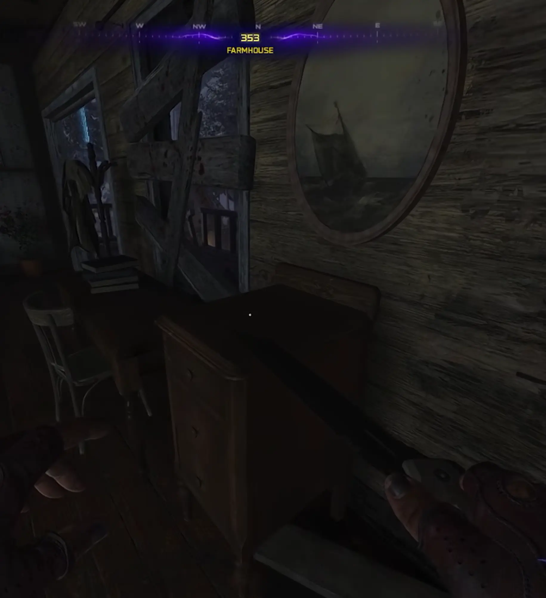
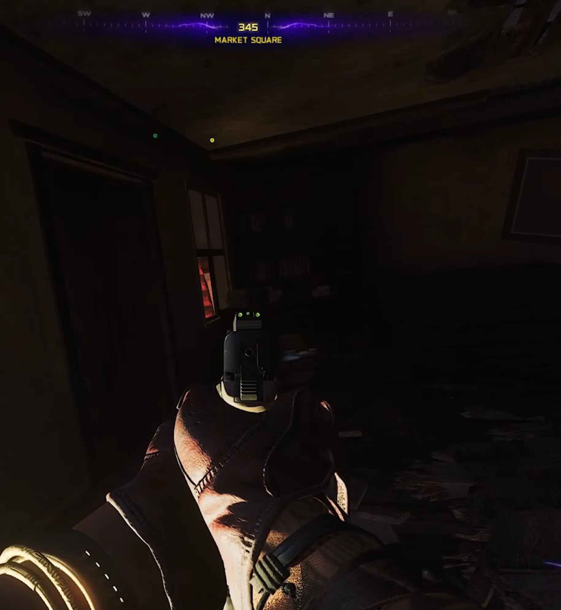
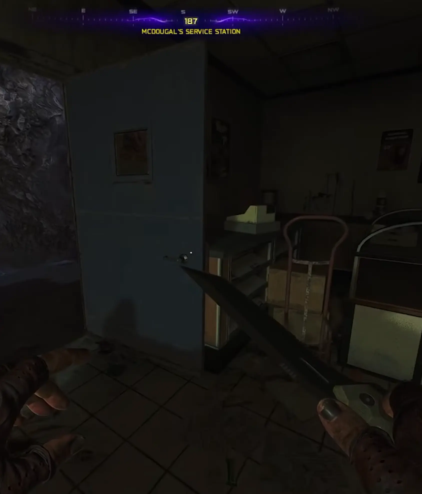
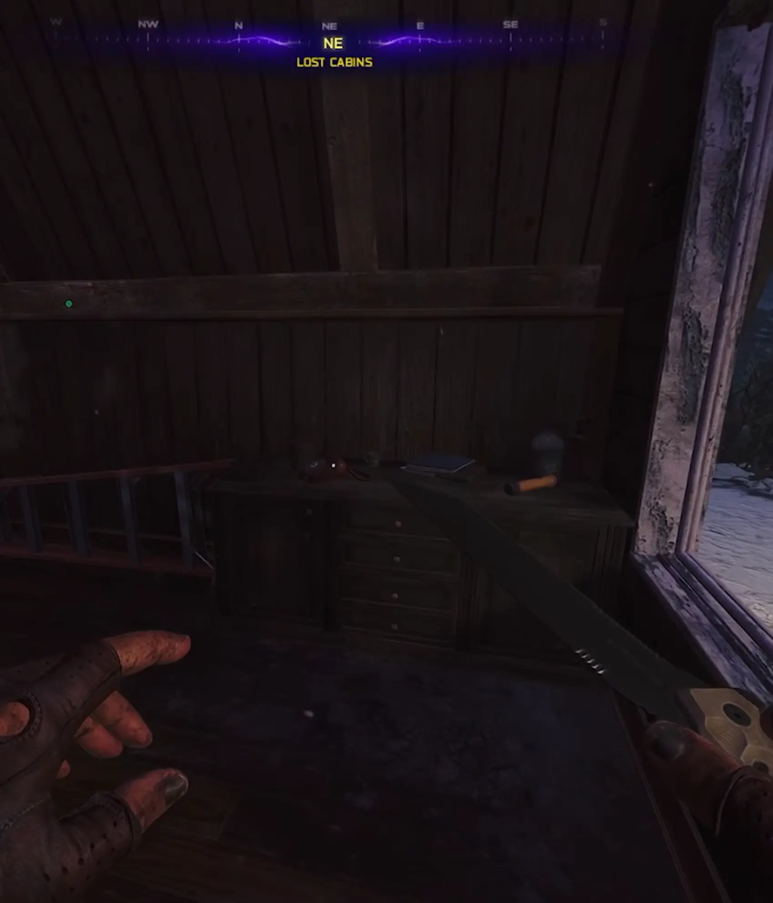

Musisz mieć ukończone główne zadanie Ashes Of The Damned. Mecz musisz właczyć na poziomie Tier 2. Wyzwanie będzie aktywne od rundy 60+.

KROK 1: Upiorne Telefony:
Przygotuj się na długą sesję – wyzwanie kończy się dopiero w okolicach 60. rundy.
Kiedy szukać?: Telefony dzwonią w rundach 20, 30, 40, 50 i 60.
Gdzie szukać?: Telefon spawnuje się tylko w jednym miejscu naraz. Gdy dzwoni, usłyszysz go z daleka – jest ekstremalnie głośny. Sprawdzaj te lokacje:
Janus Towers Plaza: Pokój serwerowy w punkcie startowym.

Zarya Cosmodrome: Pokój kontrolny.

Blackwater Lake: Szopa z narzędziami.

Vandorn Farm: Stół na parterze domu.

Ashwood: Targowisko lub sklep Hargroves Mercantile.

Exit 115: Stacja paliw lub bar w Dinerze.

Lost Cabins: Jedna z chatek między Ashwood a jeziorem.

Interakcja: Musisz podejść do dzwoniącego telefonu i przytrzymać przycisk interakcji (spamowanie przycisku może pomóc). Telefon zacznie lewitować, a Ty usłyszysz śmiech Mr Peaks.
KROK 2: Czerwony Portal w Kabinie:
Gdy odbierzesz wszystkie 5 telefonów i dotrzesz do Rundy 60+, udaj się do chaty nad Blackwater Lake.
Pojawi się tam Red Portal (Czerwony portal).
Zabierz ze sobą najlepszy sprzęt i ulepszenia Pack-a-Punch, bo za chwilę poczujesz czysty mrok.
KROK 3: Próba Krwi:
To wyzwanie to prawdziwy test Twojego skilla. Zasady wewnątrz portalu są brutalne:
Osłabienie: Twoje bronie zadają o 50% mniejsze obrażenia!
Struktura: Musisz przetrwać 6 fal zombie.
Fale HVT: W rundach 3 oraz 6 zaatakują Cię HVTs Cele o wysokiej wartości. Skup na nich cały ogień.
NAGRODA: Relikt Fiolki Krwi
Co daje ten relikt po aktywacji?
EFEKT: To totalna masakra dla fanów buildów – blokuje wszystkie Augments (Ulepszenia) dla Perk-a-Cola, Field Upgrades (Ulepszenia polowe) i Ammo Mods (Modyfikacje amunicji).
Będziesz grać na "czystych" statystykach, co sprawia, że gra staje się ekstremalnie trudna!